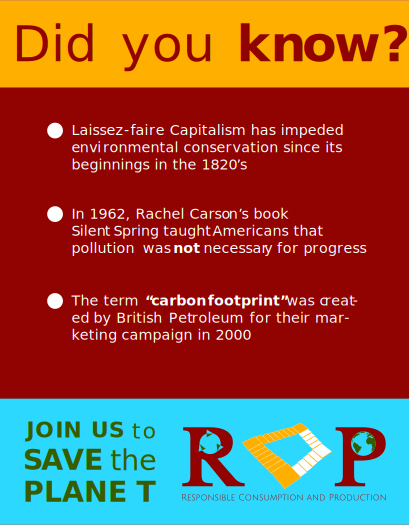

Animated GIF Ad
I took one of the ads I made previously and animated it using photoshop's video timeline. It starts out zoomed in on the factory to emphasize it, then the graphics slide in. I tried to make the words fade at different times to place emphasis on certain words, as if the animation was speaking to you.
Video
Storyboard for a video ad for RCP (PDF 14.7MB). I took inspiration from my own dread of the recent extreme weather to make a serious and solemn video. In another context, simply having text fade in and fade out may be considered lazy, but I felt that it was the only way to convey the seriousness that I wanted. Having many moving graphics bouncing around is more fitting for an advertisement that energizes the viewer into buying, not a serious environmentalist organization.
I used environmental sounds to accompany the video of the natural disasters. Everything else is silent, until the tone of the video changes to a more hopeful one and Bach music starts playing.
Adobe XD Interactive Prototype
'" width="410" height="525">I was told to make a prototype using Adobe XD and the social media ads; in which each ad fades into the next after clicking on it. You can view the interactive prototype by clicking on the image on the right.